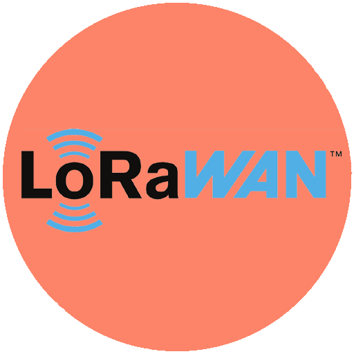

Volley Boast Monitoring Service Overview
Volley Boast provides customers with the data and analytics necessary to both increase revenues and improve operational efficiency. Modern technology offers the opportunity to monitor production, equipment, facilities, and operations that were previously too expensive and difficult to track remotely. Properly deployed, such technology helps customers know where their team's attention is most needed and how their manpower can be put to optimal use.
The elegance and simplicity of Volley Boast’s Monitoring Service is driven by two key parameters:
Intermittent Data Collection
For many businesses there is a sweet spot on the cost/benefit spectrum between continuous remote data sampling/monitoring (on the one extreme) and periodic manual visual inspection of operations (on the other extreme). This sweet spot is often found with periodic or intermittent remote monitoring. In a large number of operations, the transmission of hourly or daily data provides more than enough information to greatly improve operational KPIs while, at the same time, significantly reduces direct O&M expenses.

LoRaWAN
Volley Boast uses a very long range and very low power radio technology called LoRa to set up low cost wide area private networks (using LoRaWAN). The low power nature of the radio and the intermittent data sampling makes it possible to power the radio and the connected sensors for more than a year (and in many cases multiple years) with two D-sized batteries. Data from operations that were previously too expensive to monitor can now be cost effectively collected.